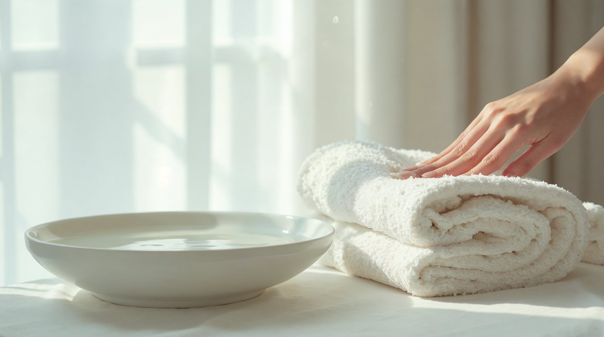
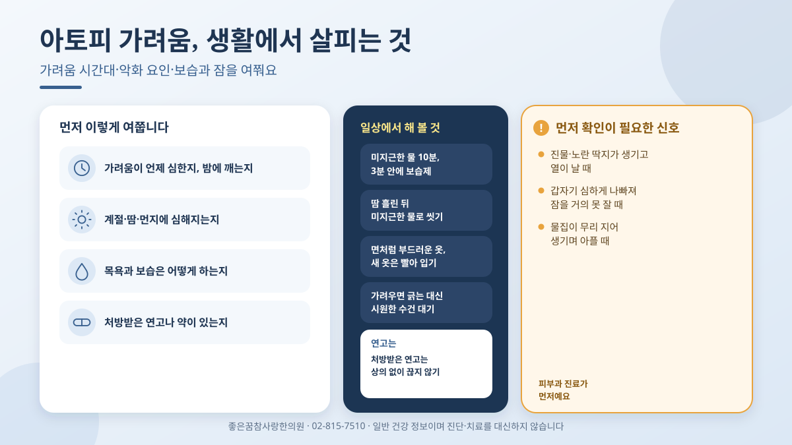

이종호 한의사 감수좋은꿈참사랑한의원 대표원장 (한의사 면허번호 19769)발행 2026-11-26 · 수정 2026-11-26
이 글의 차례
새벽 세 시, 오금과 목덜미가 화끈거려 눈을 뜹니다. 정신을 차려 보면 손은 벌써 무릎 뒤를 긁고 있고, 아침이면 이불에 작은 핏자국이 남아 있습니다. 아토피 피부염의 가려움은 하나만 바꿔서는 잘 잡히지 않고, 씻고 바르는 순서와 옷, 방, 밤잠을 함께 손볼 때 조금씩 다루기 쉬워지는 경우가 많습니다.
그래서 저는 모든 분께 맥부터 짚으며 가려움이 언제 심한지, 보습제를 언제 바르는지, 밤에 몇 번 깨시는지 여쭙습니다. 처방받은 스테로이드 연고와 약은 처방한 의사와 상의 없이 끊거나 줄이지 않습니다.
진료실에서 이런 말씀을 자주 듣습니다. 긁지 말라는 말이 제일 야속하다고요. 누구보다 안 긁고 싶은 사람은 본인인데, 잠결에 손이 먼저 가 있으니 아침마다 자책만 쌓입니다.
가려움은 참을성이 모자라서 생기는 일이 아닙니다. 끊기는 잠, 낮 동안의 예민함, 소매로 가리게 되는 긁은 자국까지, 그 지친 마음부터 알아 드리고 싶습니다.
왜 밤이 되면 더 가려울까요
아토피 피부는 물기를 붙잡아 두는 겉 보호막이 약한 편입니다. 그래서 같은 방에 있어도 남보다 빨리 마르고, 땀이나 까슬한 옷감 같은 작은 자극에도 쉽게 가려워집니다.
밤에는 이 약점이 더 드러납니다. 이불 속에서 피부 온도가 오르고, 난방으로 공기는 마르고, 낮 동안 일에 쏠려 있던 신경이 조용한 방에서 온통 가려움으로 향합니다. 불을 끄고 눕기만 하면 시작되는 가려움, 혹시 익숙하지 않으신가요?
긁으면 잠깐은 시원하지만 그 자리의 보호막이 더 상해 다시 가려워집니다. 여기에 잠까지 끊기면 다음 날 몸이 예민해지고, 그날 밤 같은 가려움을 더 크게 느끼게 됩니다. 아파서 못 자고, 못 자서 더 아픈 통증의 고리와 많이 닮았지요.
열감, 소화, 긴장을 함께 보는 이유
한의학에서는 피부를 몸 바깥의 일로만 보지 않습니다. 저는 진료할 때마다 체온, 소화, 수면, 배설이라는 네 가지 신호를 함께 살핍니다. 검사 수치에 다 드러나지 않을 때가 많지만, 몸 상태를 이해하는 귀한 단서가 됩니다.
얼굴과 상체로 열이 확 오르는 날 가려움이 심하다는 분이 있고, 저녁을 늦게 많이 먹은 밤에 유난히 긁게 된다는 분이 있습니다. 긴장이 큰 주에 접히는 곳부터 붉어진다는 분도 있지요. 같은 아토피라도 흔들리는 리듬은 사람마다 다릅니다.
이렇게 나눠 보는 것은 타고난 체질을 정하려는 것이 아니라 지금 몸이 보내는 신호를 읽으려는 것입니다. 마음 탓으로 돌리려는 것도 아닙니다. 같은 가려움도 잠을 못 잔 날, 속이 불편한 날에는 더 크게 느껴질 수 있어 그 흐름을 함께 봅니다.
가려움이 심한 시간대를 어떻게 적어 두면 좋은지는 가려움이 낮에 심한지 밤에 심한지는 왜 묻고, 어떻게 적어 두나요?에 따로 정리해 두었습니다.
예를 들면 이런 경우입니다
예를 들어 야근이 잦아 밤 열 시가 넘어 저녁을 먹고, 뜨거운 물로 오래 씻은 뒤 바로 눕는 직장인이라면 저녁 시간과 물 온도부터 봅니다. 저녁을 한 시간 앞당기고 물을 미지근하게 낮춘 날, 밤에 몇 번 깼는지 비교해 적어 보시라고 권합니다.
예를 들어 아이를 재우고 나오면 방에서 사각사각 긁는 소리가 들리는 집이라면, 목욕을 마치고 보습제를 바르기까지 몇 분이 걸리는지, 잠옷 옷감과 방 온도는 어떤지부터 보호자와 함께 짚어 봅니다.
예를 들어 시험이나 이직처럼 긴장이 큰 시기마다 목과 손목 안쪽이 먼저 붉어지는 분이라면, 피부와 함께 잠드는 시각과 끼니 시간을 같이 적어 봅니다. 긴장이 큰 주와 편한 주를 나란히 놓으면 무엇이 달라졌는지 보이기도 합니다.
스스로 점검해 보세요
- 가려움 때문에 일주일에 사흘 넘게 밤에 깬다
- 씻고 나와 보습제를 바르기까지 5분 넘게 걸리는 날이 많다
- 뜨거운 물로 오래 씻거나 때를 밀어야 개운하다
- 땀을 흘리거나 난방이 센 방에 있으면 더 가렵다
- 긴장이 큰 시기나 늦게 많이 먹은 밤에 더 긁는다
- 처방받은 연고를 스스로 끊었다가 다시 심해진 적이 있다
- 진물이 나거나 노란 딱지가 앉은 곳이 있다
마지막 항목에 해당하면 생활 관리보다 피부과 진료가 먼저입니다. 나머지는 몇 개에 해당하는지 표시해 오시면 무엇부터 바꿀지 함께 정하기 쉽습니다.
먼저 이렇게 여쭙니다
- 가려움은 하루 중 언제 가장 심한가요? 가려워서 깨시나요, 깨고 나서 긁게 되시나요?
- 어디가 가장 심하고, 땀·먼지·옷감·계절 가운데 무엇에 더 예민한가요?
- 씻는 물 온도와 시간, 보습제를 바르는 때와 양은 어떤가요?
- 피부과에서 처방받은 연고나 먹는 약이 있나요? 지금 어떻게 쓰고 계신가요?
- 얼굴로 열이 오르거나 손발이 찬 편인가요? 끼니 시간과 소화, 대변은 어떤가요?
첫 질문의 대답에 따라 살필 곳이 갈립니다. 가려워서 깨는 분이라면 방 온도와 이불, 잠들기 전 보습부터 봅니다. 소변이나 걱정, 늦은 식사로 먼저 깬 뒤 긁기 시작한다면 잠을 흔드는 그 원인부터 살핍니다. 같은 '밤에 긁는다'는 말 안에 서로 다른 두 밤이 있는 셈입니다.
연고 이야기를 꺼내기 망설이는 분이 많습니다. 스테로이드라는 말이 마음에 걸려 몰래 덜 바르다가 다시 심해지는 일도 드물지 않습니다. 바르는 양과 기간, 줄이는 순서는 처방한 의사와 정할 일이니, 걱정되는 점을 적어 가서 꼭 물어보세요.

일상에서 먼저 해 볼 수 있는 것
- 미지근한 물로 10분 안쪽 씻고, 수건으로 눌러 닦은 뒤 3분 안에 보습제 바르기
- 보습제는 향이 강하지 않은 것으로, 괜찮은 날에도 하루 두 번 이상 넉넉히 바르기
- 맨살에 닿는 옷은 부드러운 면으로 고르고, 새 옷은 한 번 빨아 입기
- 손톱은 짧고 둥글게 다듬고, 가려울 때는 긁는 대신 시원한 수건을 대거나 지그시 누르기
- 방 습도는 40~60% 사이로, 침실은 조금 서늘하게, 이불은 한 겹 가볍게
목욕: 물 온도와 바르는 순서
잠이 흔들리는 분께 저는 잠들기 1~2시간 전 따뜻한 물에 몸을 담그시라고 권하는 편입니다. 다만 아토피 피부라면 물 온도를 손등에 댔을 때 미지근한 정도로 낮추고, 시간도 10분 안쪽으로 줄여 주세요.
뜨거운 물로 씻고 나면 잠깐 시원하다가 금세 더 당기지 않으셨나요? 뜨거운 물이 피부의 물기를 더 빼앗아 가기 때문입니다. 세정제는 순한 것을 겨드랑이와 사타구니, 발처럼 땀이 차는 곳에만 조금 쓰고, 때수건은 쉬어 주세요.
물기가 살짝 남았을 때 바로 바르는 것이 순서입니다. 보습제는 값보다 매일 넉넉히 바를 수 있는지가 먼저이고, 건조가 심한 곳에는 묽은 로션보다 꾸덕한 크림 쪽이 물기를 오래 붙잡아 두는 편입니다. 쓰던 제품 이름은 적어 두세요.
땀과 가려움이 몰려올 때
땀도 가려움을 부르는 흔한 계기입니다. 운동이나 더운 실내에서 땀을 흘렸다면 마르기 전에 미지근한 물로 가볍게 헹구거나 젖은 수건으로 눌러 닦고, 젖은 옷은 바로 갈아입으세요. 운동을 멀리하라는 뜻은 아닙니다.
가려움이 확 몰려올 때는 긁는 대신 찬물에 적신 수건을 5분쯤 대 보세요. 보습제를 한 번 더 덧바르거나 손바닥으로 지그시 누르는 것도 방법입니다. 손이 갈 만한 다른 일을 하나 정해 두는 분도 있습니다.
옷과 손톱
까슬한 니트가 맨살에 닿으면 몇 분 만에 가려워진다는 분이 있습니다. 안에 면 옷을 한 겹 받쳐 입고, 목 뒤 상표는 잘라 두세요. 세제는 충분히 헹구고, 향이 강한 섬유유연제는 잠시 쉬어 보셔도 좋습니다.
긁는 손을 탓하기보다 긁어도 덜 상하게 준비해 두는 편이 현실적입니다. 손톱을 짧게 다듬어 두고, 밤에 많이 긁는다면 얇은 면장갑을 끼고 자는 가정도 있습니다. 아이라면 자는 동안 긁는 시간대를 보호자께서 한두 번 살펴 두시면 기록에 도움이 됩니다.
방의 온도와 습도, 그리고 밤잠
겨울에는 보일러를 세게 틀고 두꺼운 이불을 덮기 쉬운데, 몸이 데워지면 가려움도 따라 올라옵니다. 바닥 난방은 조금 낮추고 가습기로 습도를 맞추세요. 습도가 너무 높으면 곰팡이와 집먼지진드기가 늘 수 있어, 가습기 물은 매일 갈아 줍니다.
따뜻한 바닥에서 자고 나면 등과 종아리가 가렵다면 보일러를 세게 틀고 자면 등과 종아리가 가려운 것은 어떻게 살피나요?도 함께 읽어 보세요.
잠자리 리듬도 함께 봅니다. 저녁은 잠들기 3시간 전쯤 가볍게 마치고, 잠들기 전 30분은 휴대폰 대신 보습제를 한 번 더 바르는 시간으로 써 보세요. 일어나는 시각을 먼저 일정하게 맞추면 밤잠도 따라 자리를 잡는 경우가 많습니다.
잠과 피부가 어떻게 이어지는지는 잠이 부족하면 피부가 푸석하고 트러블이 나는 이유는 무엇인가요?에서 더 읽어 보실 수 있습니다.
이렇게 2주쯤 지내며 지켜보셔도 됩니다. 그래도 매일 밤 깨거나 긁은 상처가 늘어난다면, 피부과 진료와 상담을 함께 받아 보세요.
한의원에서 함께 살필 수 있는 경우
- 피부과 치료를 이어 가면서도 밤마다 가려워 잠을 설치는 경우
- 긴장이 큰 시기나 끼니가 흐트러진 시기마다 가려움이 심해지는 경우
- 얼굴로 열이 오르거나 손발이 차고, 소화나 대변이 함께 불편한 경우
좋은꿈참사랑한의원에 처음 오시면 모든 분께 그렇듯 양손의 맥부터 짚으며, 가려움이 심한 시간대와 부위, 피부과에서 받은 진단과 쓰고 있는 연고를 여쭙습니다. 연고와 바르는 방법은 그대로 두고, 그 치료와 겹치지 않게 생활에서 바꿔 볼 것을 찾는 것이 순서입니다.
"모든 치료의 시작과 끝에 진맥이 있어야 한다."는 것이 제 진료의 원칙입니다. 상도동 언덕길을 서둘러 올라오셨다면 잠시 숨을 고르신 뒤에 짚습니다.
맥을 짚으며 잠, 식사 뒤 속, 대변, 몸의 온도를 여쭙고, 필요하다고 판단될 때 혀를 봅니다. 맥과 혀는 참고하는 단서일 뿐 피부 진단을 대신하지 않습니다. 피부 자체의 변화는 피부과에서 직접 보는 것이 정확합니다.
모은 이야기를 놓고 침이나 한약 상담 가운데 맞는 방향과, 이번 주에 바꿔 볼 생활 한두 가지를 함께 정합니다. 아이라면 보호자와 충분히 상의해 나이와 상태에 맞춰 신중하게 정합니다.
침을 놓을 때는 긁은 상처나 진물이 있는 자리를 피해서 자리를 고릅니다. 한약을 상의할 때는 소화 상태와 지금 드시는 약을 먼저 확인합니다. 같은 아토피라도 약을 드실 분의 몸이 다르면 살피는 방향도 달라지기 때문입니다.
결과를 미리 약속드리지는 않습니다. 할 수 있는 일과 어려운 일을 함께 말씀드리고, 다시 오시면 맥을 다시 짚으며 그사이 밤에 몇 번 깨셨는지, 정한 습관이 지킬 만했는지부터 여쭙습니다.
이렇게 기록해 오시면 상담이 쉬워집니다
- 2주 동안 밤에 깬 횟수와 아침의 가려움 점수(0~10)
- 가장 가려웠던 날의 저녁 시간, 씻은 물 온도, 땀·음식·긴장했던 일
- 심할 때와 가라앉았을 때의 사진(같은 부위, 같은 밝기)
- 쓰고 있는 연고·보습제·먹는 약의 이름과 바르는 횟수, 피부과 진료 내용
거창한 일기는 필요 없습니다. 달력 한 칸에 숫자 두 개만 적어도 일주일이면 흐름이 보입니다. 가려운 밤과 덜 가려운 밤을 나란히 놓으면 생각지 못한 차이가 보이곤 합니다.
연고와 보습제는 통째로 가져오시거나 앞뒤 면을 사진으로 찍어 오셔도 됩니다. 이름이 비슷한 제품이 많아서, 직접 보면 무엇을 얼마나 쓰고 계신지 함께 확인하기 쉽습니다.
가려움과 함께 지내 온 시간이 길었을 겁니다. 하루아침에 편해지기를 바라기보다, 오늘 밤 물 온도 하나, 보습 순서 하나부터 함께 바꿔 보면 좋겠습니다. 다음에 오시면 지난 2주 동안 가장 가려웠던 밤이 언제였는지부터 여쭙겠습니다.
이런 증상은 먼저 확인이 필요합니다
- 진물이 나고 노란 딱지가 앉으며 그 범위가 번지는 경우(감염 의심)
- 작은 물집이 무리 지어 생기고 아프며 빠르게 번지는 경우
이런 신호가 있으면 한의원보다 가까운 병원이나 응급실을 먼저 찾으세요.

여쭙는 것
- 가려움은 하루 중 언제 가장 심한가요? 가려워서 깨시나요, 깨고 나서 긁게 되시나요?
- 어디가 가장 심하고, 땀·먼지·옷감·계절 가운데 무엇에 더 예민한가요?
- 씻는 물 온도와 시간, 보습제를 바르는 때와 양은 어떤가요?
생활에서 해 볼 것
- 미지근한 물로 10분 안쪽 씻고, 수건으로 눌러 닦은 뒤 3분 안에 보습제 바르기
- 보습제는 향이 강하지 않은 것으로, 괜찮은 날에도 하루 두 번 이상 넉넉히 바르기
- 맨살에 닿는 옷은 부드러운 면으로 고르고, 새 옷은 한 번 빨아 입기
한의원에서 함께 살필 것
- 피부과 치료를 이어 가면서도 밤마다 가려워 잠을 설치는 경우
- 긴장이 큰 시기나 끼니가 흐트러진 시기마다 가려움이 심해지는 경우
- 얼굴로 열이 오르거나 손발이 차고, 소화나 대변이 함께 불편한 경우
먼저 확인이 필요한 신호
- 진물이 나고 노란 딱지가 앉으며 그 범위가 번지는 경우(감염 의심)
- 작은 물집이 무리 지어 생기고 아프며 빠르게 번지는 경우
한눈에 보는 표
| 구분 | 핵심 |
|---|---|
| 여쭙는 것 | 가려움은 하루 중 언제 가장 심한가요? 가려워서 깨시나요, 깨고 나서 긁게 되시나요? 어디가 가장 심하고, 땀·먼지·옷감·계절 가운데 무엇에 더 예민한가요? |
| 생활에서 해 볼 것 | 미지근한 물로 10분 안쪽 씻고, 수건으로 눌러 닦은 뒤 3분 안에 보습제 바르기 보습제는 향이 강하지 않은 것으로, 괜찮은 날에도 하루 두 번 이상 넉넉히 바르기 |
| 한의원에서 함께 살필 것 | 피부과 치료를 이어 가면서도 밤마다 가려워 잠을 설치는 경우 긴장이 큰 시기나 끼니가 흐트러진 시기마다 가려움이 심해지는 경우 |
| 먼저 확인이 필요한 신호 | 진물이 나고 노란 딱지가 앉으며 그 범위가 번지는 경우(감염 의심) 작은 물집이 무리 지어 생기고 아프며 빠르게 번지는 경우 |
자주 묻는 질문
아토피도 한의원에서 상담할 수 있나요?
네. 피부과 치료는 그대로 이어 가시면서 가려움의 시간대와 잠, 소화, 몸의 온도를 함께 살핍니다. 결과를 미리 약속드리지 않고, 진료 뒤 맞는 방향을 설명해 드립니다.
스테로이드 연고가 걱정되는데 줄여도 되나요?
처방받은 연고와 약은 처방한 의사와 상의 없이 끊거나 줄이지 않습니다. 걱정되는 점을 적어 가서 바르는 양과 기간, 줄이는 순서를 처방한 의사에게 물어보세요.
음식을 가려야 하나요?
한꺼번에 여러 음식을 끊기보다 먹은 뒤 심해지는지 2주쯤 적어 보세요. 의심되는 음식은 병원 검사로 확인한 뒤 정하는 편이 안전하고, 아이라면 영양이 모자라지 않게 더 살펴야 합니다.
아이도 진료받을 수 있나요?
나이와 상태에 맞춰 보호자와 충분히 상의해 신중하게 정합니다. 쓰고 있는 연고와 약, 보습제 이름을 모두 알려 주세요.
좋은꿈참사랑한의원은 재진 때 지난번 이야기부터 이어서 여쭙니다. 진료시간과 예약은 오시는 길에서 확인하세요.
어디서 상담받을 수 있나요?
좋은꿈참사랑한의원은 서울 동작구 만양로2길 2 신성빌딩 3층·5층(서울 동작구 상도동, 7호선 상도역 3번 출구 근처)에 있습니다. 한의사 3명(이종호 대표원장, 조영기 수석진료원장, 정원영 진료원장)이 진료합니다. 진료시간은 평일 09:30~20:00(점심 13:00~14:00), 토·일·공휴일 09:30~15:00이며, 방문 전 전화로 확인을 권합니다. 예약은 네이버 예약, 카카오톡 상담, 전화 02-815-7510로 받습니다.
이 글은 일반적인 건강 정보이며 개인의 진단이나 치료를 대신하지 않습니다. 증상이 있거나 복용 중인 약이 있다면 진료를 통해 확인하세요. 치료 효과는 개인마다 다를 수 있습니다.
작성 기준: 일반적으로 알려져 있는 건강 정보를 참고해 정리했습니다(대표원장 감수). 증상 기록은 1~2주 동안 하루 1회, 비슷한 시간에 적어 오시면 지난 상태와 비교하기 쉽습니다.